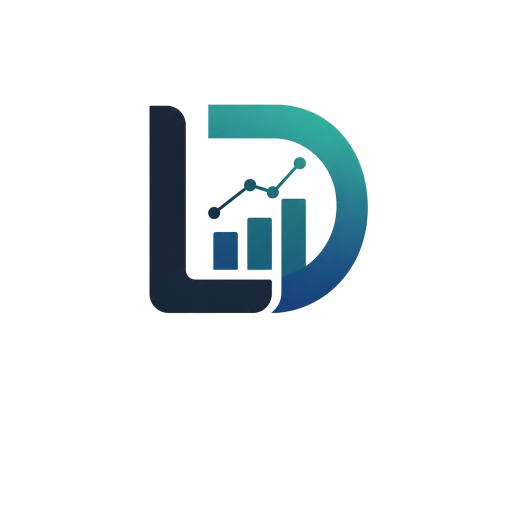
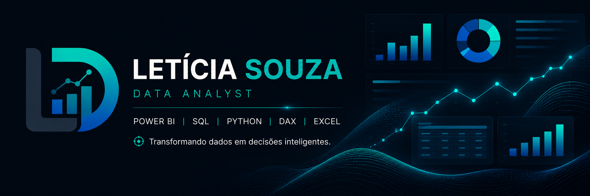
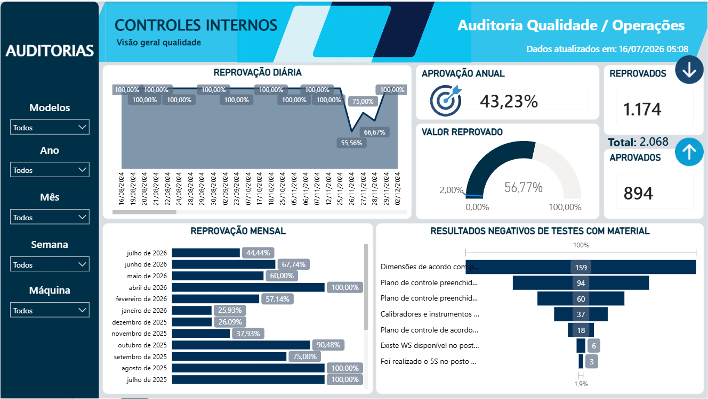
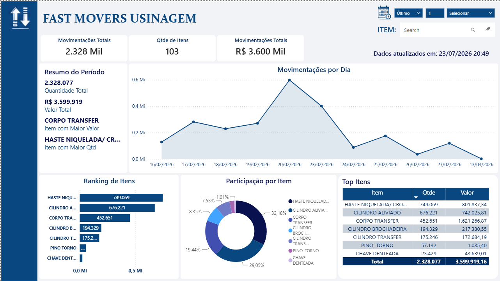
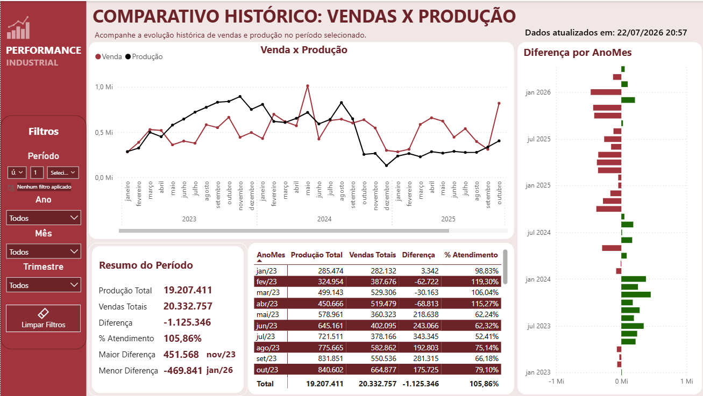

Business Intelligence • Power BI • SQL • Python

Estagiária de Dados com experiência na construção de bases sólidas a partir de múltiplas fontes (DataSheet, Access, Datasul, Python, SQL, Power Query) e na criação de dashboards em Power BI e Looker.
Conhecimento intermediário em DAX e Excel, além de habilidades em automação e apresentações em PowerPoint.
Experiência anterior em empresas como PepsiCo Sorocaba, atuando em rotinas administrativas e de qualidade com SAP ERP, Power BI e Pacote Office, e na Sociedade de Advogados Fadiga, Buosi e Camargo, apoiando em processos financeiros e jurídicos com Google Workspace e GCPJ.
Formação em Ciência e Análise de Dados, com foco atual em visualização e estruturação de dados para análise de negócios inteligentes e geração de insights estratégicos.
✔ Power BI
✔ SQL Server
✔ Python
✔ Excel
✔ Power Query
✔ DAX

Dashboard para monitoramento de indicadores de qualidade e auditorias industriais.

Dashboard de classificação prática, usado para destacar os produtos com maior movimentação de estoque no setor de semiacados (usinagem).

Dashboard para acompanhamento da performance produtiva em comparação as vendas.
📧 E-mail
leticiasouzasouza16@gmail.com
💼 LinkedIn
www.linkedin.com/in/leticia-souza-a56169281